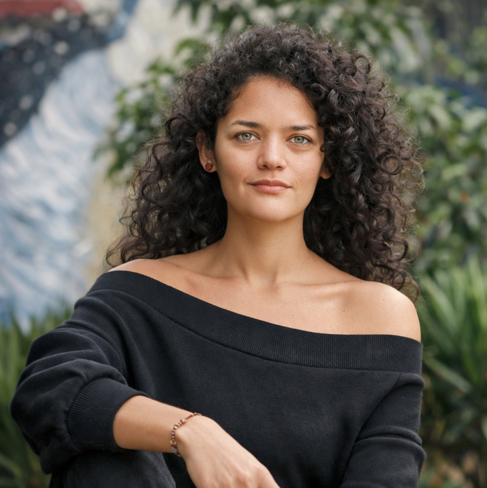

CUATRO CONVERSACIONES PARA ESCUCHAR EL PRESENTE
Periodismo, territorio, biodiversidad y derechos de la naturaleza: cuatro voces del Hay Festival Cartagena 2026 para pensar cómo se cuenta y se cuida la vida en América Latina.
Hay momentos en los que una entrevista no alcanza a contener lo que se está moviendo por debajo: cambios en la forma de informarnos, tensiones entre desarrollo y sostenibilidad, disputas por el territorio y, sobre todo, preguntas nuevas sobre qué significa “vivir bien” en regiones atravesadas por la crisis ambiental y social. Este especial reúne cuatro conversaciones que, desde lugares distintos, se tocan en un mismo punto, la urgencia de narrar con rigor lo que está en juego.
En estas páginas se cruzan la experiencia de sostener un medio independiente en la era del audio, la vida insular que se resiste a ser reducida a postal, la divulgación científica como relato capaz de cambiar la mirada, y las luchas comunitarias que empujan el giro jurídico y cultural de reconocer ríos y lagos como sujetos de derecho. No son entrevistas sobre un tema único; son diálogos que iluminan cómo la realidad se fragmenta y cómo también puede volver a conectarse cuando se escucha con atención.
Las cuatro conversaciones fueron trabajadas como piezas complementarias, cada una abre una puerta distinta, pero todas insisten en lo mismo, que contar bien importa porque afecta cómo entendemos el mundo y qué decisiones aceptamos como inevitables. Al final, este especial propone una idea simple, escuchar es una forma de cuidado.
DESCUBRE TODAS LAS ENTREVISTAS

“Mientras sigamos matándonos entre nosotros, no resolveremos la crisis ambiental”:
Andrés Cota Hiriart

“La isla es un cuerpo. Tiene su propia historia, aparte de nuestras tragedias humanas”:
Cristina Bendek

Daniel Alarcón y la tensión entre contar historias y sostener un medio independiente

Guardianas del agua del Titicaca y Atrato exigen lagos y ríos “sujetos de derecho”
ENTREVISTAS
Jose Ignacio Estupiñan
DISEÑO Y DIAGRAMACIÓN
María José Mejía Jay
DESARROLLO WEB
Juan David Ceballos Ayala